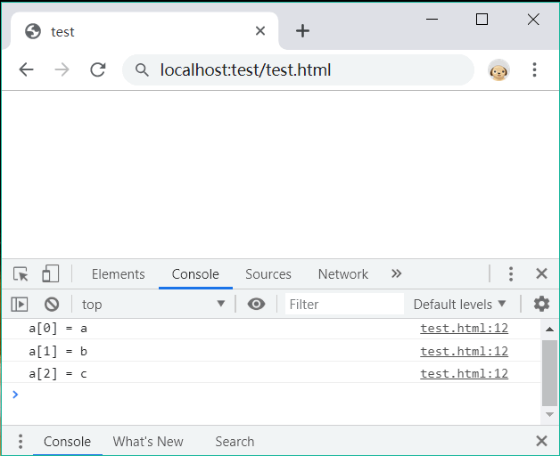

首页 > 编程笔记
JS遍历数组（for in和forEach循环）
JS 遍历数组（循环数组）的方式有多种，可以使用传统的 for 循环，也可以使用升级版的 for in 循环，还可以使用 Array 类型的 forEach() 方法；如果希望遍历对象的键名，还可以使用 keys() 方法。
对于超长数组来说，建议使用 for/in 语句进行迭代。
对于数组中出现的每个元素，forEach 方法都会调用 callbackfn 函数一次，采用升序索引顺序，但不会为数组中空元素调用回调函数。
除了数组对象之外，forEach 方法还可以用于有 length 属性且具有已按数字编制索引的属性名的任何对象，如关联数组对象、Arguments 等。
回调函数语法如下：
forEach 方法不直接修改原始数组，但回调函数可能会修改它。在 forEach 方法启动后修改数组对象所获得的结果如表所示。
Object 还有一个类似的静态函数：getOwnPropertyNames(),与 keys 用法相同，参数都是对象，返回值都是一个数组，数组元素都是属性名。不同点：keys 仅能迭代本地、可枚举的属性，getOwnPropertyNames 可以迭代所有本地属性。
使用 for 和 for in遍历数组
for 和 for/in 语句都可以迭代数组。for 语句需要配合 length 属性和数组下标来实现，执行效率没有 for/in 语句高。另外，for/in 语句会跳过空元素。对于超长数组来说，建议使用 for/in 语句进行迭代。
示例1
下面示例使用 for 语句迭代数组，过滤出所有数字元素。
var a = [1, 2, ,,,,,,true,,,,,,, "a",,,,,,,,,,,,,,,4,,,,,56,,,,,,"b"]; //定义数组
var b = [], num = 0;
for (var i = 0; i < a.length; i ++) { //遍历数组
if (typeof a[i] == "number") //如果为数字，则返回该元素的值
b.push(a[i]);
num ++; //计数器
}
console.log(num); //返回42，说明循环了42次
console.log(b); //返回[1,2,4,56]
示例2
下面代码使用 for/in 语句迭代示例 1 中的数组 a。在 for/in 循环结构中，变量 i 表示数组的下标，而 a[i] 为可以读取指定下标的元素值。
var b = [], num = 0;
for (var i in a) { //遍历数组
if（typeof a[i] == "number") //如果为数字，则返回该元素的值
b.push(a[i]);
num ++; //计数器
}
console.log(num); //返回7，说明循环了7次
console.log(b); //返回[1,2,4,56]
通过计时器可以看到，for/in 语句迭代数组，仅循环了 7 次，而 for 语句循环了 42 次。
使用 forEach 遍历数组
Array 类型为每个数组定义了 forEach() 原型方法，使用该方法可以为数组执行迭代操作。具体说明如下：array.forEach(callbackfn[, thisArg]);
参数说明如下：- array：一个数组对象。
- callbackfn：必需参数，最多可以接收三个参数的函数。forEach 将为数组中的每个元素调用 callbackfn 函数一次。
- thisArg：可选参数，callbackfn 函数中的 this 可引用的对象。如果省略 thisArg，则 this 的值为 undefined。
对于数组中出现的每个元素，forEach 方法都会调用 callbackfn 函数一次，采用升序索引顺序，但不会为数组中空元素调用回调函数。
除了数组对象之外，forEach 方法还可以用于有 length 属性且具有已按数字编制索引的属性名的任何对象，如关联数组对象、Arguments 等。
回调函数语法如下：
funtion callbackfn(value, index, array);
最多可以使用三个参数来声明回调函数。回调函数的参数说明如下。- value：数组元素的值。
- index：数组元素的数字索引。
- array：包含该元素的数组对象。
forEach 方法不直接修改原始数组，但回调函数可能会修改它。在 forEach 方法启动后修改数组对象所获得的结果如表所示。
| forEach 方法启动后的条件 | 元素是否传递给回调函数 |
|---|---|
| 在数组的原始长度之外添加元素 | 否 |
| 添加元素以填充数组中缺少的元素 | 是，如果该索引尚未传递给回调函数 |
| 元素已更改 | 是，如果该元素尚未传递给回调函数 |
| 从数组中删除元素 | 否，除非该元素已传递给回调函数 |
示例1
下面示例使用 forEach 迭代数组 a，然后把每个元素的值和下标索引输出显示，代码如下：
function f(value,index,array) {
console.log("a[" + index + "] = " + value);
}
var a = ['a', 'b', 'c'];
a.forEach(f);
演示结果如下：

示例2
下面示例使用 forEach 迭代数组 a，然后计算数组元素的和并输出。
var a = [10, 11, 12], sum = 0;
a.forEach (function (value) {
sum += value;
});
console.log(sum); //返回33
示例3
下面示例演示如何使用 forEach() 方法的第二个参数，该参数为回调函数的 this 传递对象。当迭代数组过程中，先读取数组元素的值，然后改写它的值。
var obj = {
f1 : function(value,index,array) {
console.log("a[" + index + "] = " + value);
arrar[index] = this.f2(value);
},
f2 : function (x) {return x * x;}
};
var a = [12, 26, 36];
a.forEach(obj.f1, obj);
console.log(a); //返回[144, 676, 1296]
使用 keys 遍历对象键名
keys() 是 Object 的静态函数，专门用来遍历对象获取键名。Object.keys() 函数的参数是一个对象，返回一个数组，元素是该对象所以本地属性名。如果使用该函数迭代数组，可以汇集数组的所有元素下标值。示例1
下面代码直观的比较了 keys 迭代对象和数组的不同。
var o = {a : "A", b : "B", c : "C"};
console.log(Object.keys(o)); //返回["a","b","c"]
var a = ["A", "B", "C"];
console.log(Object.keys(a)); //返回["0","1","2"]
keys 功能比较专一，应用范围比较窄，但是执行效率比较高。
示例2
除了获取键名集合外，使用 keys 还可以间接统计对象的长度。
var o = {a : "A", b : "B", c : "C"};
console.log(Object.keys(o).length); //返回3
var a = ["A", "B", "C"];
console.log(Object.keys(a).length); //返回3
Object 类型没有定义 length 原型属性，可以利用 keys 方法获取对象的长度。Object 还有一个类似的静态函数：getOwnPropertyNames(),与 keys 用法相同，参数都是对象，返回值都是一个数组，数组元素都是属性名。不同点：keys 仅能迭代本地、可枚举的属性，getOwnPropertyNames 可以迭代所有本地属性。
var o = {a : "A", b : "B", c : "C"};
console.log(Object.keys(o)); //返回["a","b","c"]
console.log(Object.getOwnPropertyNames (o)); //返回["a","b","c"]
var a = ["A", "B", "C"];
console.log(Object.keys(a)); //返回["0","1","2"]
console.log(Object.getOwnPropertyNames (a)); //返回["0","1","2"]
数组的 length 是不可枚举的属性，所以仅能在 Object.getOwnPropertyNames 返回结果中看到。因此，要快速迭代数组，可以使用 keys 方法。关注公众号「站长严长生」，在手机上阅读所有教程，随时随地都能学习。内含一款搜索神器，免费下载全网书籍和视频。

微信扫码关注公众号